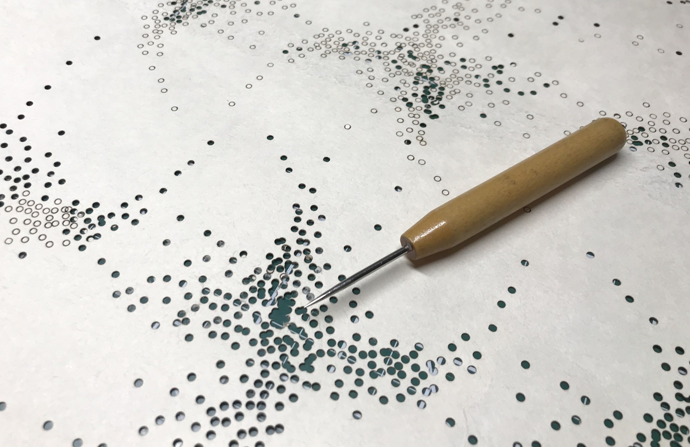

<div class="page-content">
  <div id="top-container">
    <!--  -->
    <!--  -->
    <!--  -->
    
    <div id="mission-statement-container">
        <p id="mission-statement"> <i><b>Programmatic Studio</b></i> is a workshop and information repository seeking to harmonize traditional printmaking, papermaking, and fiber-based crafts with computational techniques.</p>
        <a class="laura-link" href="https://www.lauraasher.com/">www.lauraasher.com</a>
    </div>
  </div>
</div>
